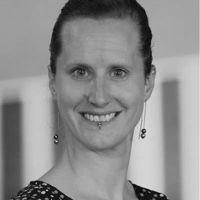
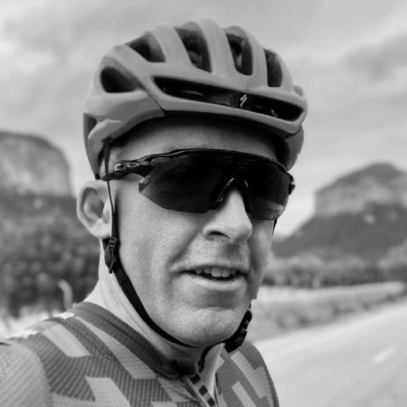

| 10:45 CEST 04:45 EDT 01:45 PDT | Welcome to fsharpConf 2020!Join #fsharpconf-chat on F# Foundation Slack! |
| 11:00 CEST 05:00 EDT 02:00 PDT | Hedy: A gradual programming language for educationFelienne Hermans |
| 11:45 CEST 05:45 EDT 02:45 PDT | Formatting F# source codeFlorian Verdonck |
| 12:30 CEST 06:30 EDT 03:30 PDT | When Korean Hackers Met F#Sang Kil Cha & JongHyup Lee |
| 13:00 CEST 07:00 EDT 04:00 PDT | BREAK: F# code golf!Join #fsharpconf-chat on F# Foundation Slack! |
| 14:00 CEST 08:00 EDT 05:00 PDT |  On Independence!Don Syme |
| 14:45 CEST 08:45 EDT 05:45 PDT | SAFE Stack – The Road AheadIsaac Abraham |
| 15:00 CEST 09:00 EDT 06:00 PDT |  Cloud Superpowers with Pulumi and F#Mikhail Shilkov |
| 15:30 CEST 09:30 EDT 06:30 PDT | Build Fabulous desktop and mobile apps in 2 easy stepsTimothé Larivière |
| 15:45 CEST 09:45 EDT 06:45 PDT | F# Domain Modeling and Mathematical PlanningMatthew Crews |
| 16:00 CEST 10:00 EDT 07:00 PDT | BREAK: F# code poetry!Join #fsharpconf-chat on F# Foundation Slack! |
| 17:00 CEST 11:00 EDT 08:00 PDT |  Probabilistic Programming: The What, Why and HowMaria Gorinova |
| 17:45 CEST 11:45 EDT 08:45 PDT |  What is going on in F# Software FoundationReed Copsey, Jr. |
| 18:15 CEST 12:15 EDT 09:15 PDT | Future of .NETImmo Landwerth |
| 18:30 CEST 12:30 EDT 09:30 PDT | A Career Pivot Straight Into F# DevelopmentFinn van Krieken |
| 18:45 CEST 12:45 EDT 09:45 PDT |  How to build an F# Type Provider from scratchOdy Mbegbu |
| 19:00 CEST 13:00 EDT 10:00 PDT | BREAK: F# pub quiz!Join #fsharpconf-chat on F# Foundation Slack! |
| 20:00 CEST 14:00 EDT 11:00 PDT | From Zero to F# HeroJames Randal |
| 20:45 CEST 14:45 EDT 11:45 PDT |  F# and Ham RadioMarnee Dearman |
| 21:30 CEST 15:30 EDT 12:30 PDT |  Q&A with Phillip Carter from the F# teamPhillip Carter |
CEST is the time in Paris, Berlin, Prague (Central European Summer Time), EDT is the time in New York (Eastern Daylight Time) and PDT is the time in Seattle (Pacific Daylight Time).
The starting time for other places in the world is London 9:45 (GMT+1), Moscow 11:45 (GMT+3), New Delhi 14:15 (GMT+5:30), Tokyo 17:45 (GMT+9), Sydney 19:45 (GMT+11).
If you need to sleep, don't worry, the talks will be recorded :-).